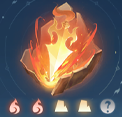

| Hình ảnh | Tên | Hệ | Loại | Chi Tiết |
|---|---|---|---|---|
| Tịnh Vực Chước Phong 灼锋净域 |
Hỏa | Hiếm | Sau khi tấn công trúng mục tiêu, trong 3 giây tiếp theo mỗi giây gây 90% tấn công thành sát thương Hỏa, thời gian hồi 6 giây . Đồng thời, tăng thêm 1200 tấn công hoặc 750 tấn công nguyên tố, hiệu quả kéo dài 8 giây (trong chế độ Luận Võ Công Bằng, chỉ số cố định bị giảm, đối với Tố Tâm, sẽ chuyển thành hồi phục duy trì và tăng cường hiệu quả trị liệu). Khi nhận được Linh Vận , tất cả hiệu ứng tăng cường và sát thương/hồi máu bổ sung đều được tăng 50% . | |
| Trảm Viêm Quyết 斩焰诀 |
Hỏa | Thường | Tăng 5% khắc chế thủ lĩnh. Khi gây sát thương lên mục tiêu Thủ lĩnh, nhận thêm 1200 phá phòng, hiệu quả kéo dài 10 giây . | |
| Thập Đan Hỏa 拾丹火 |
Hỏa | Thường | Tăng cường toàn bộ kỹ năng của bản thân thêm 2.5%. Khi tấn công mục tiêu thủ lĩnh, có thể tăng cường thêm 750 điểm toàn kỹ năng, duy trì trong 10 giây. | |
| Minh Hựu 明佑 |
Hỏa | Thường | Đòn tấn công hoặc trị liệu có xác suất kích hoạt trong 10 giây với các hiệu ứng: tăng 360 tấn công nguyên tố, tăng 480 khắc chế thủ lĩnh, và tăng 600 phá phòng. Có thể kích hoạt 2-3 hiệu ứng cùng lúc, hồi 10 giây (hiệu quả này bị giới hạn trong chế độ Luận Võ, giá trị hiệu quả sẽ giảm). | |
| Điểm Minh Lô 点明炉 |
Hỏa | Thường | Tăng 12% sát thương hoặc lượng hồi phục cho tất cả các kỹ năng gây sát thương duy trùy hoặc hồi máu liên tục của nhân vật. | |
| Nhật Nguyệt Lưỡng Nghi 日月两仪 |
Hỏa | Hiếm | Khi khí huyết trên 50%: Tăng hiệu quả gây sát thương (hoặc hồi máu) lên 5%. Khi khí huyết dưới 50%: Giảm sát thương nhận vào 5%. Khi kích hoạt Linh Vận: Tăng hiệu quả của các hiệu ứng trên thêm 50%. | |
| Côn Ngô Đoạn Ngọc 昆吾断玉 |
Hỏa | Hiếm | Khi thi triển kỹ năng, xác suất gây sát thương chí mạng tăng thêm 20% trong 12 giây, thời gian hồi 20 giây. Trong thời gian hiệu lực, mỗi lần chí mạng sẽ nhận được 1 tầng tăng 1% sát thương chí mạng, tối đa 4 tầng. Khi đạt được Linh Vận, khi kích hoạt sẽ trực tiếp nhận được đầy đủ tầng tăng sát thương chí mạng và thời gian hiệu lực tăng thêm 4 giây. | Huyền Hoàng Liệt Huy 玄黄烈辉 |
Hỏa | Hiếm | Khi khí huyết cao hơn hoặc thấp hơn 50%, nhận được 2.4% khắc chế hoặc phòng ngự môn phái. Cứ mỗi 5 người chơi địch hoặc đồng minh ở xung quanh sẽ thêm 1 tầng tăng 200 điểm Khắc Chế hoặc Phòng Ngự Môn Phái (tối đa 3 tầng). Khi khí huyết cao hơn 50%, ưu tiên nhận Khắc Chế; ngược lại, khi khí huyết dưới 50%, ưu tiên nhận Phòng Ngự. Khi nhận Linh Vận, các hiệu ứng tăng cường được nâng thêm 50%. | Sở Cuồng Ca 楚狂歌 |
Hỏa | Thường | Tăng sát thương 1%. Mỗi khi xung quanh có thêm một kẻ địch, sát thương tăng thêm 1%, tối đa là 5%. (Đối với Tố Vấn thì sẽ là tăng trị liệu) | Liêu Nghiệp 爆野 |
Hỏa | Thường | Cứ mỗi 4 giây khi bắt đầu giao tranh, nhân vật sẽ nhận được thêm 1 tầng sát thương, mỗi tầng tăng 1.3%. Tối đa lên đến 6.5% khi đạt được 5 tầng. Hiệu ứng này sẽ kéo dài 20 giây sau khi đạt đến 5 tầng, sau đó sẽ reset về 0 và bắt đầu tích lũy lại. (Đối với Tố Vấn thì sẽ là tăng trị liệu) | Diệt Trận 灭阵 |
Kim - Hỏa | Thường | Tăng 12% sát thương/chữa trị cho kỹ năng nhóm. Có thể xem kỹ năng nhóm trong thẻ kỹ năng và mô tả kỹ năng. |  | Tân Tinh 新精 |
Hỏa - Thổ | Thường | Khi tấn công mục tiêu có khí huyết trên 60%, gây thêm 6% - 10% sát thương. Mức sát thương sẽ tăng theo tỷ lệ khí huyết hiện tại của mục tiêu (tức là mục tiêu có khí huyết càng cao, sát thương càng lớn). Trong trạng thái Tố Vấn, hiệu ứng này chuyển thành hồi phục thêm. | Sở Mục 楚穆 |
Hỏa | Thường | Khi tấn công quái vật, gây ra hiệu ứng thiêu đốt với sát thương bằng 18% tấn công mỗi giây (hiệu ứng này chắc chắn trúng đích), kéo dài trong 8 giây. Đồng thời, sát thương của bản thân đối với quái vật bị thiêu đốt bởi Sở Mục tăng 2%. Với mục tiêu là Thủ Lĩnh, thời gian hồi chiêu là 12 giây, còn với mục tiêu không phải Thủ Lĩnh thì không có thời gian hồi chiêu. |
| Tịnh Vực Chước Phong 灼锋净域 |
Mộc | Thường | • Khi Long Ngâm thi triển "Cầu Bại" hoặc "Tà", "Phá Không", "Kiếm Ý Lôi Long" kích hoạt cộng hưởng của 3 khí kiếm trở lên, trong 7 giây, đòn tấn công sẽ bỏ qua 8% phòng ngự và khí thuẫn của mục tiêu. Thời gian hồi chiêu: 15 giây. | |
| Kiếm Tâm 剑心 |
Kim | Hiếm | • Tăng thêm: 430 điểm tấn công. Tăng 3% thuộc tính tấn công hiện có. • Khi cấp độ kỹ năng của phái Long Ngâm tăng lên, cấp độ của đặc tính này cũng sẽ tăng, hiệu ứng sẽ mạnh hơn. (Hiệu ứng phần trăm tối đa tăng lên tới 38%). |
|
 |
Kiếm Ý Truy Kích 剑意追击 |
Kim | Thường | • Có thể thêm chiêu thức kỹ năng phụ trợ. Nhấn nút truy kích để kích hoạt một số kỹ năng trong một khoảng thời gian nhất định và khởi động Kiếm Ý Truy Kích đặc biệt. • Kiếm Ý: Sử dụng Kiếm Ý Truy Kích tiêu hao 30 điểm Kiếm Ý.• Kiếm Tâm: Trong trận chiến, khi sử dụng Kiếm Ý Truy Kích, nhận được 1 điểm Kiếm Tâm (một số kỹ năng phải trúng đích mới có thể nhận được). • Khí Kiếm: Một số kỹ năng có thể cắm xuống Khí Kiếm. Khi kích hoạt cộng hưởng Khí Kiếm, tốc độ hồi phục Kiếm Ý tăng lên và nhận được 1 điểm Kiếm Tâm.• Thanh Long Bạo: Khi tiếp xúc với Khí Kiếm của bản thân, gọi Thiên Lôi gây sát thương. Thiên Lôi gây thêm sát thương lên quái vật. |
 |
Nhất Mộng Thiên Nhất 一梦千一 |
Thuỷ | Hiếm | • Cơ chế Toái Mộng: Khi nhanh chóng liên tiếp sử dụng kỹ năng Toái Ảnh, sẽ tạo thành chuỗi liên kích. Sau 4 lần sử dụng kỹ năng liên tiếp, sẽ đạt được Nhất Mộng Thiên Nhất cùng lúc tăng cường tấn công Ngoại công cho nhân vật. • Nhất Mộng Thiên Nhất: Kích hoạt một lần Bạt Đao Tích nhanh chóng, gây sát thương cho kẻ thù xung quanh.• Tân Diệt: Kỹ năng bạo phát gây thêm sát thương cho mục tiêu có lượng máu dưới 30%. • Bản thân nhân vật sẽ nhận hiệu ứng Tăng khả năng bỏ qua kháng nguyên tố, có hiệu lực đối với cả người chơi và quái vật.• Khi cấp độ kỹ năng môn phái Toái Ảnh tăng lên, cấp độ của đặc tính này cũng sẽ tăng theo, khiến hiệu quả mạnh mẽ hơn. |
|
Cực Ý 极意 |
Thuỷ | Thường | • Tích huyền: Mỗi giây, Toái Mộng tích lũy Cực Ý. khi đầy, tấn công kẻ địch sẽ kích hoạt hiệu ứng Cực Ý, tăng cường khả năng của bản thân, trong khi đó Cực Ý sẽ nhanh chóng tiêu hao, khi Cực Ý về 0, hiệu ứng sẽ biến mất. • Linh lực: Trong trạng thái Cực Ý, bản thân nhận được giảm sát thương.• Mộng bản: Trong trạng thái Cực Ý, mỗi khi Toái Mộng thực hiện 千一 (Ngàn Một), sẽ hồi phục một lượng Cực Ý nhỏ. • Khi cấp độ kỹ năng môn phái Toái Mộng được nâng cao, cấp độ thuộc tính này sẽ tăng và hiệu quả sẽ mạnh hơn. |
|
Cô Hồng Ảnh 孤鸿影 |
Thổ | Hiếm | • Thuộc tính thân pháp của Toái Mộng sẽ tăng thêm tỷ lệ chí mạng và đỡ đòn. • Mỗi điểm thân pháp tăng sẽ tăng 0.6 tỷ lệ chí mạng và 0.33 tỷ lệ đỡ đòn. Thuộc tính này không có hiệu lực trong chế độ công bằng.• Khi cấp độ kỹ năng môn phái Toái Mộng được nâng cao, cấp độ của thuộc tính này cũng sẽ được nâng cao và hiệu quả trở nên mạnh mẽ hơn. |
|
Phản Kích Cuồng Bạo 反击风暴 |
Thổ | Thường | • Khi bị tấn công, có xác suất kích hoạt Phản Kích Cuồng Bạo, lấy giá trị tấn công và phòng ngự cao nhất của bản thân làm cơ sở, phản hồi 100% sát thương. • Mỗi điểm Nại Lực sẽ tăng thêm 26 Giới Hạn Khí Huyết. (không có hiệu lực trong chế độ công bằng.) |
×